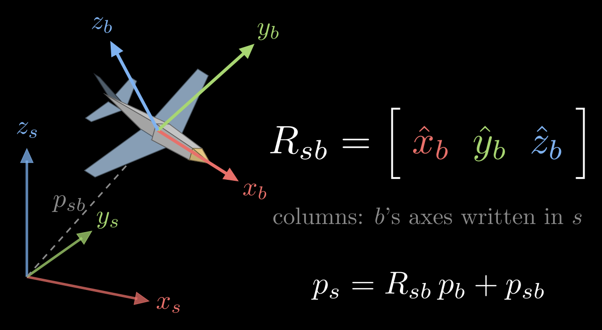
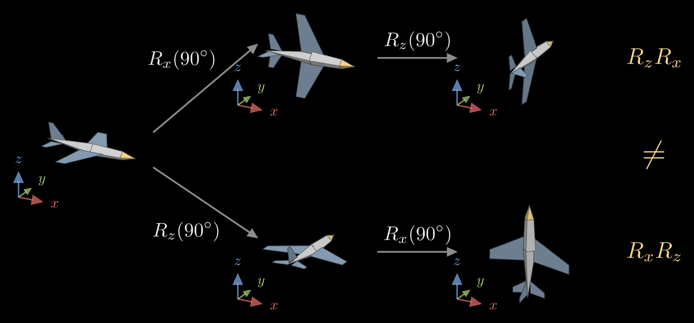
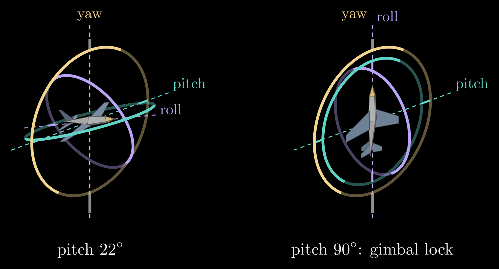
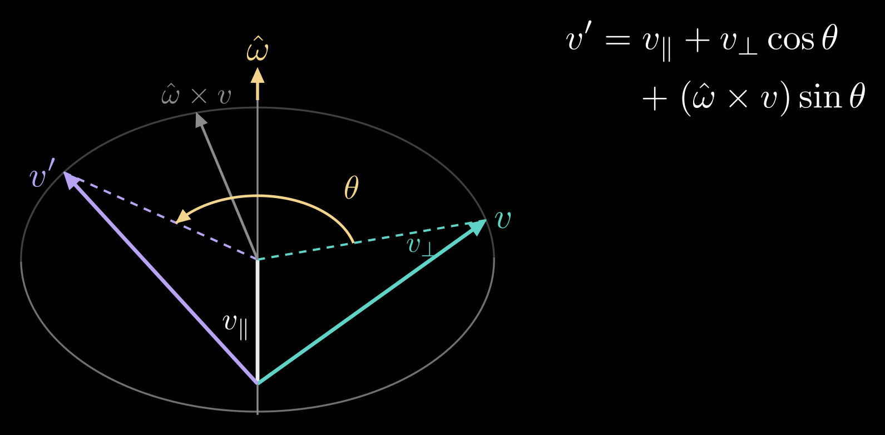
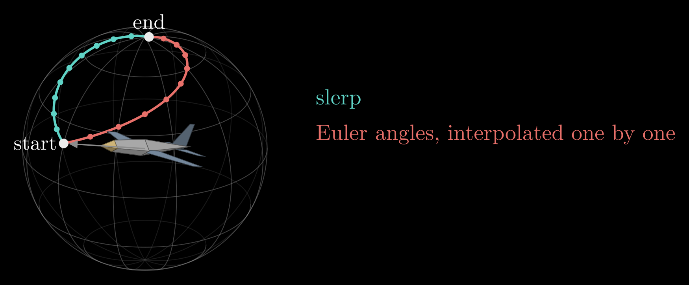

3D Rotations: Matrices, Euler Angles and Quaternions
A robot has to keep track of which way things face: its gripper, its camera, the part on the table, its own body. Position is the easy half: three numbers that add like ordinary vectors. Orientation also takes three numbers, but rotations do not add, the order in which they are applied matters, and every way of writing one with three numbers breaks down somewhere. This note goes through the four standard descriptions, rotation matrices, Euler angles, axis-angle and quaternions: what each one is, how to convert between them, and where each one fails.
This is the first of four notes on robot arms, followed by Forward Kinematics, Inverse Kinematics and The Manipulator Jacobian. Rotation matrices also appear in Camera Extrinsic Matrix, where they turn world coordinates into camera coordinates.
Video: Quaternions: How Computers Speak 3D Rotation, a four-and-a-half-minute visual explainer of this note, from rotation matrices and gimbal lock to quaternions and slerp.
Frames and rotation matrices
An orientation is always relative: it says how one coordinate frame is turned with respect to another. A frame is an origin plus three unit-length axes \(\hat{x}\), \(\hat{y}\), \(\hat{z}\) at right angles to each other, ordered by the right-hand rule, \(\hat{x} \times \hat{y} = \hat{z}\). The usual setup fixes a space frame {s} to the world and attaches a body frame {b} to the moving object, here an airplane with \(\hat{x}_b\) along its nose, \(\hat{y}_b\) along its left wing and \(\hat{z}_b\) up through its tail fin.
Write each body axis in space-frame coordinates and stack the three as columns:
\[R_{sb} = \begin{bmatrix} \hat{x}_b & \hat{y}_b & \hat{z}_b \end{bmatrix}\]
This 3×3 matrix is the rotation matrix of {b} relative to {s}, and its subscripts read "b as seen from s". It holds the whole orientation: the first column says where the nose points, the second where the left wing points, the third where the fin points, all in world coordinates.

Figure 1. The space frame {s} at the origin and the body frame {b} attached to an airplane. The columns of \(R_{sb}\) are the body axes written in space coordinates, and \(p_{sb}\) is the position of the body frame's origin.
Because its columns have length one and are perpendicular to each other, a rotation matrix satisfies \(R^{\mathsf T} R = I\), where \(R^{\mathsf T}\) is the transpose and \(I\) the 3×3 identity matrix. Because the axes are right-handed, \(\det R = +1\). The matrices with these two properties form the special orthogonal group SO(3), and every one of them is a rotation. Nine entries tied by six constraints, three unit lengths and three right angles, leave three degrees of freedom: the three independent ways an object can turn.
The inverse of a rotation matrix is its transpose, \(R_{bs} = R_{sb}^{-1} = R_{sb}^{\mathsf T}\), so undoing a rotation costs nothing.
What a rotation matrix does
The same matrix does three jobs.
- It represents an orientation, as above.
- It changes coordinates. A point fixed to the body has coordinates \(p_b\) in the body frame. Its coordinates in the space frame are \(p_s = R_{sb}\, p_b + p_{sb}\), where \(p_{sb}\) is the position of the body frame's origin in {s}. For a direction rather than a point, such as a velocity, the shift is left out: \(v_s = R_{sb}\, v_b\).
- It rotates. Applied to a vector, \(v' = R\,v\) turns the vector while keeping its length.
Frames chain by matrix multiplication, \(R_{sc} = R_{sb}\, R_{bc}\), the orientation of a third frame {c} given the middle frame {b}. The inner subscripts match and cancel, a quick check that a product is written in the right order.
The building blocks are the turns by an angle \(\theta\) about the three coordinate axes:
\[R_x(\theta) = \begin{bmatrix} 1 & 0 & 0 \\ 0 & \cos\theta & -\sin\theta \\ 0 & \sin\theta & \cos\theta \end{bmatrix}, \quad R_y(\theta) = \begin{bmatrix} \cos\theta & 0 & \sin\theta \\ 0 & 1 & 0 \\ -\sin\theta & 0 & \cos\theta \end{bmatrix}, \quad R_z(\theta) = \begin{bmatrix} \cos\theta & -\sin\theta & 0 \\ \sin\theta & \cos\theta & 0 \\ 0 & 0 & 1 \end{bmatrix}\]
A positive angle turns counterclockwise when the axis points at you: with the right thumb along the axis, the fingers curl in the positive direction.
Unlike vectors, rotations do not commute: \(R_1 R_2 \neq R_2 R_1\) in general. Turning an airplane 90° about x and then 90° about z leaves it facing a different way than making the same two turns in the opposite order (Figure 2).

Figure 2. The same two 90° turns, about the space frame's x and z axes, in two orders. Top: x first, then z, which is the product \(R_z R_x\). Bottom: z first, then x, which is \(R_x R_z\). The small axes beside each airplane are the space frame.
The figure also shows which side a turn multiplies on. A turn about one of the space frame's fixed axes multiplies on the left, \(R_{sb}' = \mathrm{Rot}\; R_{sb}\), where Rot is the elementary rotation, such as \(R_x(\theta)\). A turn about one of the body's own axes, the way a pilot thinks (pitch the nose up, then roll), multiplies on the right, \(R_{sb}' = R_{sb}\; \mathrm{Rot}\). So a list of turns about the moving body axes, applied in the order 1, 2, 3, gives the same result as the same turns about the fixed axes applied in the order 3, 2, 1.
Euler angles
A rotation matrix spends nine numbers on three degrees of freedom. Euler angles use exactly three: the orientation is built from three turns about coordinate axes. The usual choice in robotics and aviation is yaw, pitch and roll. Turn by the yaw angle \(\alpha\) about z, which sets the heading; then by the pitch angle \(\beta\) about the new y axis, which tips the nose; then by the roll angle \(\gamma\) about the newest x axis, which banks the wings. Each turn is about the body's current axis, so the factors multiply on the right:
\[R = R_z(\alpha)\, R_y(\beta)\, R_x(\gamma) = \begin{bmatrix} c_\alpha c_\beta & c_\alpha s_\beta s_\gamma - s_\alpha c_\gamma & c_\alpha s_\beta c_\gamma + s_\alpha s_\gamma \\ s_\alpha c_\beta & s_\alpha s_\beta s_\gamma + c_\alpha c_\gamma & s_\alpha s_\beta c_\gamma - c_\alpha s_\gamma \\ -s_\beta & c_\beta s_\gamma & c_\beta c_\gamma \end{bmatrix}\]
where \(c_\alpha = \cos\alpha\), \(s_\alpha = \sin\alpha\), and likewise for the other angles. With the z axis pointing up, a positive pitch tips the nose down, because \(R_y\) turns x toward \(-z\).
Reading the angles back out of a rotation matrix with entries \(r_{ij}\) (row i, column j):
\[\beta = \operatorname{atan2}\big(-r_{31},\, \sqrt{r_{11}^2 + r_{21}^2}\big), \qquad \alpha = \operatorname{atan2}(r_{21}, r_{11}), \qquad \gamma = \operatorname{atan2}(r_{32}, r_{33})\]
Here atan2(y, x) is the angle of the point (x, y) measured from the x axis, with the quadrant taken into account. This picks \(\beta\) between −90° and 90°; the angles \((\alpha + 180^\circ,\; 180^\circ - \beta,\; \gamma + 180^\circ)\) describe the same orientation, so every orientation has two sets of yaw, pitch and roll.
Yaw-pitch-roll is one of 12 possible sequences of axes: six with three different axes, such as z-y-x (Tait–Bryan angles), and six that repeat the first axis at the end, such as z-x-z (proper Euler angles, used for spinning tops and for some robot wrists). Each sequence can also be read as turns about fixed axes or about moving ones. Software libraries disagree about the default, so the convention has to be stated next to the numbers.
Gimbal lock
Euler angles fail when the pitch reaches ±90° and the nose points straight down or straight up. Substituting \(\beta = 90^\circ\) into the matrix gives
\[R = \begin{bmatrix} 0 & \sin(\gamma - \alpha) & \cos(\gamma - \alpha) \\ 0 & \cos(\gamma - \alpha) & -\sin(\gamma - \alpha) \\ -1 & 0 & 0 \end{bmatrix}\]
which depends on yaw and roll only through their difference. Both have become turns about the same vertical line, so a change of one can be undone by the other, and one way of turning, about the horizontal axis at right angles to the pitch axis, cannot be produced by a small change of any of the three angles. This is gimbal lock. Close to it, a small turn of the object can demand large, fast swings of \(\alpha\) and \(\gamma\), and angles read back from a matrix jump around.
The name comes from gimbal mounts, three nested rings that each turn about one axis, the way a gyroscope or a camera stabilizer is hung. At a pitch of 90° the roll axis lines up with the yaw axis, the outer two rings fold into one plane, and the mount can no longer follow a turn about the missing axis (Figure 3). The inertial platform of the Apollo spacecraft hung in three gimbals, and its guidance computer warned the crew when the middle gimbal drifted toward this angle.

Figure 3. A gimbal mount for yaw, pitch and roll. The outer ring (yellow) turns about the vertical yaw axis, the middle ring (teal) about the pitch axis, and the inner ring (purple) about the airplane's nose, the roll axis. Left: at a pitch of 22° the three axes point three different ways. Right: with the nose pitched up 90°, the roll axis lines up with the yaw axis and the outer and middle rings lie in one plane.
Gimbal lock belongs to the three-angle description, not to the object: the airplane itself can still turn any way it likes. It is also unavoidable in some form, because no description of 3D rotations by three numbers is free of singular points; the choice of axes only decides where they sit. Euler angles stay the right tool for showing an orientation to a person, for typing one in, and for motions that keep well away from the lock, such as a camera that tilts by a few tens of degrees.
Axis-angle and Rodrigues' formula
Euler's rotation theorem says that any rotation, however it was built up, is a single turn by some angle \(\theta\) about some fixed axis, given by a unit vector \(\hat{\omega}\). The axis is the one direction the rotation leaves unchanged, an eigenvector of \(R\) with eigenvalue 1.
To turn a vector \(v\) about \(\hat{\omega}\) by \(\theta\), split it into a part along the axis and a part across it:
\[v_\parallel = (\hat{\omega} \cdot v)\, \hat{\omega}, \qquad v_\perp = v - v_\parallel\]
The turn leaves \(v_\parallel\) alone and swings \(v_\perp\) around a circle in the plane perpendicular to the axis. In that plane, \(v_\perp\) and \(\hat{\omega} \times v\) are two perpendicular vectors of the same length (the cross product with the unit vector \(\hat\omega\) turns \(v_\perp\) by 90° and keeps its length), so the turned vector is
\[v' = v_\parallel + v_\perp \cos\theta + (\hat{\omega} \times v) \sin\theta\]
This is Rodrigues' rotation formula (Figure 4).

Figure 4. Rodrigues' formula. The part of \(v\) along the axis \(\hat{\omega}\) stays put; the part across it, \(v_\perp\), turns by \(\theta\) in the plane perpendicular to the axis, which is spanned by \(v_\perp\) and \(\hat{\omega} \times v\).
The cross product with \(\hat{\omega} = (\omega_1, \omega_2, \omega_3)\) is a matrix product, \(\hat{\omega} \times v = [\hat{\omega}]\, v\), with the skew-symmetric matrix
\[[\hat{\omega}] = \begin{bmatrix} 0 & -\omega_3 & \omega_2 \\ \omega_3 & 0 & -\omega_1 \\ -\omega_2 & \omega_1 & 0 \end{bmatrix}\]
Using \([\hat{\omega}]^2 v = \hat{\omega} \times (\hat{\omega} \times v) = -v_\perp\), Rodrigues' formula becomes a rotation matrix:
\[R = I + \sin\theta\, [\hat{\omega}] + (1 - \cos\theta)\, [\hat{\omega}]^2\]
Going back from a matrix to an axis and an angle uses the trace (the sum of the diagonal entries), \(\operatorname{tr} R = 1 + 2\cos\theta\), and the antisymmetric part of \(R\):
\[\theta = \arccos\frac{\operatorname{tr} R - 1}{2}, \qquad \hat{\omega} = \frac{1}{2\sin\theta} \begin{bmatrix} r_{32} - r_{23} \\ r_{13} - r_{31} \\ r_{21} - r_{12} \end{bmatrix}\]
The formula breaks down at \(\theta = 0\), where nothing turns and any axis will do, and loses accuracy near \(\theta = 180^\circ\), where a half turn about \(\hat{\omega}\) and one about \(-\hat{\omega}\) coincide; there the axis is read from the diagonal of \(R\) instead.
Axis and angle pack into one vector, the rotation vector \(\theta\, \hat{\omega}\), whose direction is the axis and whose length is the angle. Rodrigues' formula is then the matrix exponential of its skew matrix, \(R = \exp(\theta\, [\hat{\omega}])\), which is why the rotation vector is also called the exponential coordinates of \(R\), and the way back from \(R\) to \(\theta\, \hat{\omega}\) is the matrix logarithm. The rotation vector is the natural description of small rotations and of spinning. A body turning with a constant angular velocity \(\omega\), a vector along the spin axis whose length is the rate in radians per second, is turned by \(\exp([\omega]\, t)\) after a time \(t\). Programs that estimate orientations, such as bundle adjustment and visual odometry, update a rotation by composing it with a small rotation \(\exp([\delta])\), for a three-number correction \(\delta\), instead of editing the nine entries, so every step stays a valid rotation.
Quaternions
Quaternions describe a rotation with four numbers and avoid the problems of the descriptions above. A quaternion is \(q = w + x\,i + y\,j + z\,k\), a scalar part \(w\) plus a vector part \(u = (x, y, z)\), where the imaginary units obey \(i^2 = j^2 = k^2 = ijk = -1\). Written as a pair \(q = (w, u)\), the product of two quaternions is
\[q_1 q_2 = (w_1 w_2 - u_1 \cdot u_2,\;\; w_1 u_2 + w_2 u_1 + u_1 \times u_2)\]
The cross product makes the result depend on the order, just as for rotations.
The turn by \(\theta\) about the unit axis \(\hat{\omega}\) is the unit quaternion
\[q = \Big(\cos\frac{\theta}{2},\;\; \sin\frac{\theta}{2}\, \hat{\omega}\Big)\]
whose four entries satisfy \(w^2 + x^2 + y^2 + z^2 = 1\). To rotate a vector \(v\), treat it as a quaternion with zero scalar part and multiply on both sides:
\[(0, v') = q\, (0, v)\, q^{*}\]
where \(q^{*} = (w, -u)\) is the conjugate, which for a unit quaternion is also the inverse. Rotations compose by multiplication in the same order as matrices: \(q_{sc} = q_{sb}\, q_{bc}\).
The half angle appears because \(q\) acts twice, once from each side of \(v\), and each multiplication contributes half of the turn. A consequence is that \(q\) and \(-q\) give the same rotation, since the two sign changes cancel; turning by an extra full circle, \(\theta + 360^\circ\), about the same axis flips the sign of every entry. Unit quaternions therefore cover each rotation exactly twice, and code that compares, averages or interpolates quaternions must first make their dot product non-negative, flipping the sign of one of them if needed.
The rotation matrix of a unit quaternion \(q = (w, x, y, z)\) is
\[R(q) = \begin{bmatrix} 1 - 2(y^2 + z^2) & 2(xy - wz) & 2(xz + wy) \\ 2(xy + wz) & 1 - 2(x^2 + z^2) & 2(yz - wx) \\ 2(xz - wy) & 2(yz + wx) & 1 - 2(x^2 + y^2) \end{bmatrix}\]
Going the other way, the scalar part comes from the trace, \(w = \tfrac{1}{2}\sqrt{1 + \operatorname{tr} R}\), and then \(x = (r_{32} - r_{23})/(4w)\), \(y = (r_{13} - r_{31})/(4w)\) and \(z = (r_{21} - r_{12})/(4w)\). When \(w\) is close to zero, robust code starts from the largest diagonal entry instead.
Why quaternions are the usual way to store orientation:
- Four numbers and one constraint. Rounding errors pull a quaternion off unit length, and dividing by its length puts it back; a rotation matrix that drifts has to be re-orthogonalized, which is more work.
- No singularity. Every orientation has a smooth neighborhood of quaternions around it, so there is no gimbal lock.
- Cheap composition. Multiplying two quaternions takes 16 multiplications, against 27 for two 3×3 matrices.
- Smooth interpolation, described next.
To move smoothly from an orientation \(q_0\) to another, \(q_1\), spherical linear interpolation, or slerp, walks along the shortest arc between them on the sphere of unit quaternions at a constant rate:
\[\operatorname{slerp}(q_0, q_1; t) = \frac{\sin((1 - t)\Omega)}{\sin\Omega}\, q_0 + \frac{\sin(t\,\Omega)}{\sin\Omega}\, q_1, \qquad \cos\Omega = q_0 \cdot q_1\]
for \(t\) running from 0 to 1, where \(q_0 \cdot q_1\) is the dot product of the four entries and \(\Omega\) is the angle between the two quaternions on that sphere, half the angle of the turn from one orientation to the other. Along the way the object turns about one fixed axis at a steady rate, the short way. Interpolating the three Euler angles one by one instead gives a path that bends and changes speed, and that swings wildly near the lock (Figure 5). Animation software and robot motion planners blend orientations with slerp.

Figure 5. Where the airplane's nose points while its orientation moves from start to end, drawn on a sphere of directions; the dots mark equal steps of \(t\). Slerp (teal) turns at a constant rate the short way. Interpolating yaw, pitch and roll one by one (red) takes a longer, uneven path, here because the end orientation points almost straight up, close to gimbal lock.
Two conventions cause most quaternion bugs. One is the storage order: many papers and Eigen's constructor write (w, x, y, z), while ROS messages, SciPy and Unity store (x, y, z, w). The other is the multiplication rule: the Hamilton convention used here has \(ij = k\), while the JPL convention found in some spacecraft and state-estimation code has \(ij = -k\), which reverses the order of every product.
Which description to use
- Rotation matrix: nine numbers. Composes by multiplication, transforms vectors directly, and has no singularities, but drifts off SO(3) under rounding. Use it to transform points and to chain frames.
- Euler angles: three numbers. Easy to read and to type, but gimbal lock, twelve conventions and poor interpolation. Use them for display and input.
- Rotation vector (axis-angle): three numbers. The natural form for small rotations, angular velocity and optimizer updates, but it wraps around at 180°.
- Quaternion: four numbers. No singularity, cheap to normalize, compose and interpolate; \(q\) and \(-q\) are the same rotation. Use it to store, integrate and interpolate orientation, as IMU filters, game engines and ROS do.
A typical program stores quaternions, converts to a matrix when it has many points to transform, shows Euler angles to people, and uses rotation vectors for small corrections.
Adding translation
An orientation is half of a pose. The full pose of the body frame is the rotation \(R_{sb}\) together with the position \(p_{sb}\) of its origin, and points change coordinates as \(p_s = R_{sb}\, p_b + p_{sb}\). Writing points with an extra 1 at the end turns this into a single multiplication by a 4×4 homogeneous transformation matrix,
\[\begin{bmatrix} p_s \\ 1 \end{bmatrix} = T_{sb} \begin{bmatrix} p_b \\ 1 \end{bmatrix}, \qquad T_{sb} = \begin{bmatrix} R_{sb} & p_{sb} \\ 0 & 1 \end{bmatrix}\]
where the 0 is a row of three zeros, and poses chain the same way rotations do, \(T_{sc} = T_{sb}\, T_{bc}\). Chaining one such transform per joint is all of forward kinematics, the subject of the next note.